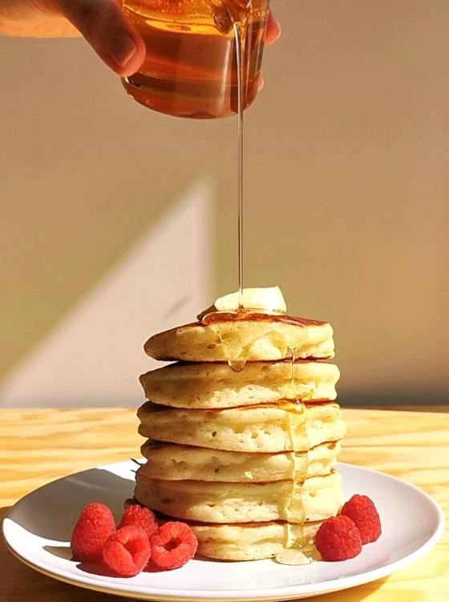

Pancakes
Home

Description
These fluffy pancakes are made from a quick, lightly sweetened batter. Serve them warm with butter and maple syrup for a simple breakfast.
Ingredients
- 1 1/2 cups all-purpose flour
- 3 1/2 teaspoons baking powder
- 1 tablespoon sugar
- 1/4 teaspoon salt
- 1 1/4 cups milk
- 1 egg
- 3 tablespoons melted butter, plus extra for the pan
- Butter and maple syrup, to serve
Steps
- Whisk together the flour, baking powder, sugar, and salt in a large bowl.
- In another bowl, whisk the milk, egg, and melted butter.
- Pour the wet ingredients into the dry ingredients and stir just until combined; a few small lumps are fine.
- Warm a lightly buttered skillet over medium heat. Pour about 1/4 cup of batter for each pancake.
- Cook until bubbles appear and the edges look set, about 2 minutes. Flip and cook until golden on the other side.
- Serve warm with butter and maple syrup.